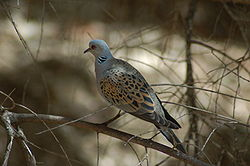
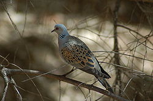

| European Turtle Dove | |
|---|---|
|  | |
| Conservation status | |
| Binomial name | |
| Streptopelia turtur (Linnaeus, 1758) |
| European Turtle Dove | |
|---|---|
|  | |
| Conservation status | |
| Binomial name | |
| Streptopelia turtur (Linnaeus, 1758) |
The European Turtle Dove (Streptopelia turtur), also known as Turtle Dove, is a member of the bird family Columbidae, which includes the doves and pigeons.
It is a migratory species with a southern Palearctic range, including Turkey and north Africa, although it is rare in northern Scandinavia and Russia. It winters in southern Africa.
According to the State of Europe's Common Birds 2007 report, the European Turtle Dove population in Europe has fallen by 62% in recent times.[1] This is partly because changed farming practices mean that the weed seeds and shoots on which it feeds, especially Fumitory, are more scarce, and partly due to shooting of birds in Mediterranean countries during their migration.
Smaller and slighter in build than other doves, the European Turtle Dove may be recognised by its browner colour, and the black-and-white-striped patch on the side of its neck. The tail is notable as the bird flies from the observer; it is wedge shaped, with a dark centre and white borders and tips. When viewed from below, this pattern, owing to the white under-tail coverts obscuring the dark bases, is a blackish chevron on a white ground. This can be seen when the bird stoops to drink and raises its spread tail.
The mature bird has the head, neck, flanks, and rump blue grey, and the wings cinnamon, mottled with black. The breast is vinaceous, the abdomen and under tail coverts are white. The bill is black, the legs and eye rims are red. The black and white patch on the side of the neck is absent in the browner and duller juvenile bird, which also has the legs brown.
The European Turtle Dove, one of the latest migrants, rarely appears in Northern Europe before the end of April, returning south again in September.
It is a bird of open rather than dense woodlands, and frequently feeds on the ground. It will occasionally nest in large gardens, but is usually extremely timid, probably due to the heavy hunting pressure it faces during migration. The flight is often described as arrowy, but is not remarkably swift.
The nuptial flight, high and circling, is like that of the Common Wood Pigeon, but the undulations are less decided; it is accompanied by the whip-crack of the downward flicked wings. The arrival in spring is heralded by its purring song, a rather deep, vibrating “turrr, turrr”, from which the bird's name is derived. Despite the identical spelling, the "turtle" of the name, derived from Latin turtur, has no connection with the reptile; "turtle" in that case came originally from Late Latin tortuca.
A few other doves in the same genus are also called turtle doves:

{kind=link}
{kind=link}